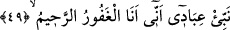

abdest bozmazlar. Orada kapları altın, tarakları altın ve gümüş, buhurdanlıkları
güzel tütsü, terleri ise misk olur. Her birinin ikişer eşi olur. Güzelliklerinden ötürü
onların etlerinin ötesinden baldırlarının içi gözükür. Aralarında ne bir anlaşmazlık,
ne de gönüllerinde birisine öfke bulunur. Sabah-akşam Allah’ı tesbih ederler.”[75]
Fethu’l-karîb’de şöyle der: Yâni, Allah’ı, sabah-akşam vakti kadar bir sürede tesbîh
ederler. Çünkü cennetle ilgili olarak zikredilen gün ve sâat gibi vakitler, takdîrî
ifâdelerdir. Vakit kavramı, gece ile gündüzün birbiri peşi sıra gelmesinden, güneş ile
ayın kendi yörüngelerindeki seyirlerinden meydana gelir. Oysa cennette böyle şeyler
yoktur.
Kurtubî de şöyle der: “Cennetliklerin yapacağı bu tesbih, ilâhî bir teklîfe ve
mecburiyete dayanmaz. Çünkü orası teklif/mükellefiyet yeri olmayıp sâdece
yaptıklarının mükâfâtını alma yeridir. Öyleyse bu tesbih, Allah’ın müyesser kılmasından
ve ilham etmesinden ileri gelmektedir. Nitekim diğer bir rivâyette şöyle buyrulur:
“Onlara nasıl nefes alıp vermeleri ilhâm edilmiş ise tesbih, tahmîd ve tekbir de
bulunmaları da ilhâm edilir.”[76] Bu benzetme şu yöndendir: İnsanın nefes alıp vermesi
zarûrîdir. Bunu yapmakta insana külfet ve meşakkat yoktur. Cennetliklerin tesbîhinin
sırrı ise şudur: Gönülleri Hakk’ı ma‘rifetle/tanımakla pürnûr, gözleri O’nu görmekle
(rü’yetullah) zevklenmiş, O’nun sayısız nîmetinden istifâde etmeye başlayınca kalpleri
O’nun sevgi ve dostluğuyla dolup taşmıştır. Onun için dilleri O’nu zikredip durmaya
başlar ve O’na şükretmekten geri kalmaz. Çünkü kim bir şeyi severse onu çok anar.
49. (Rasûlüm!) Kullarıma, benim çok bağışlayıcı ve pek esirgeyici olduğumu
haber ver.
Rivâyet edilir ki bir gün Hz. Peygamber (s.a.) Benî Şeybe kapısından Mescid-i
Harâm’a geldi. Ashabdan bir topluluğun güldüklerini gördü. Onlara: “Bana ne oluyor
da sizin güldüğünüzü görüyorum?!” buyurdu. Sahâbe bu sözden tersleme kokusu aldılar.
Peygamberimiz oradan geçip gitti. Henüz hücresine varmadan geri döndü ve: “Cebrâil
bana geldi ve ‘Niçin benim kullarımı ümitsiz edersin?! Kullarıma, benim çok
bağışlayıcı ve pek esirgeyici olduğumu haber ver.’ diye vahiy getirdi.” buyurdu.
“Kullarıma,” sâdece “benim çok bağışlayıcı” benden mağfiret taleb eden kimseyi
mağfiret edici “ve pek esirgeyici” tevbe eden kimseyi bağışlayan ve affeden
“olduğumu haber ver.” ve bildir. Yâni kullarımdan sâdır olan şeyleri Ben’den başkası
gizleyip silemez. Onlara cennette Ben’den başkası nîmet verip ihsanda bulunamaz.